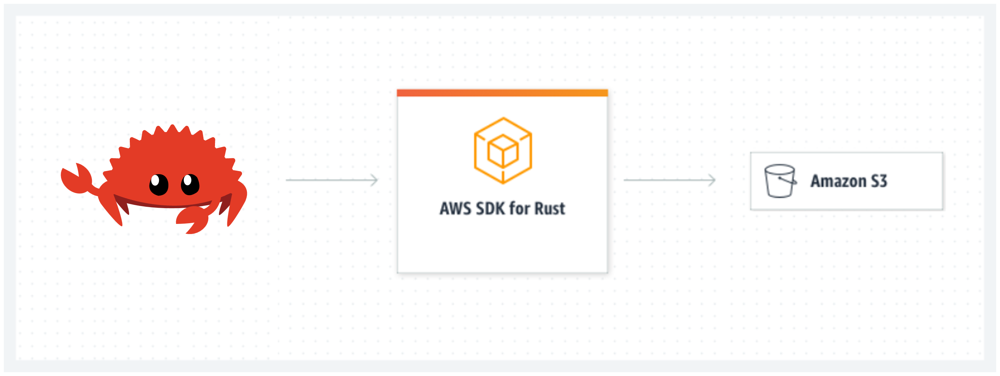

Rust AWS S3 CLI
Project Repo: https://github.com/athletedecoded/rust-s3-cli
The current AWS CLI is written in Python. For this project I have built a mini AWS S3 CLI using Rust which supports CRUD operations for buckets and objects.

Project Goals/Outcomes
- Develop my first Rust project
- Use Github Codespaces and Copilot
- Integrate the 'AWS SDK for Rust' into a Rust project
Setup
-
Create an AWS IAM User Policy for S3
-
Configure your ~/.aws/credentials file with environment variables:
aws_access_key_id,aws_secret_access_keyandregion
Run
List all S3 buckets
$ cargo run list
List all objects in a specified S3 bucket
$ cargo run list --bucket <bucket_name>
# ex: cargo run list --bucket ids721
Create new S3 bucket
$ cargo run create --bucket <bucket_name>
# ex: cargo run create --bucket ids721
Upload an object to an S3 bucket
NB: Will create bucket if DNE
$ cargo run upload --bucket <bucket_name> --filepath <path_to_file>
# ex: cargo run upload --bucket ids721 --filepath ./test/test.png
Delete an object from an S3 bucket
$ cargo run delete --bucket <bucket_name> --key <object_key>
# ex: cargo run delete --bucket ids721 --key test.png
Delete an empty S3 bucket
$ cargo run delete --bucket <bucket_name>
# ex: cargo run delete --bucket ids721
CI/CD
Github Actions configured in .github/workflows/rust.yml
Build Executable
$ make release
Progress Log
- Create an AWS IAM User Policy for S3
- Configure Github Codespaces with AWS Toolkit Credential Profile
- Initialise Rust project with AWS SDK for Rust
- Establish basic AWS client connection to list S3 buckets
- Add clap command line parsing for arguments (bucket name, local file name)
- Bucket fxns: list, create new, check if exists, delete if empty
- Object fxns: list objects in bucket, upload to existing bucket, upload to new bucket, delete
- CI/CD with Github Actions